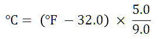

These exercises are designed to expand on the topics introduced in the Language Fundamentals chapter of the Java Development training course.
You can attempt the exercises in any order but the later exercises tend to be more complex and require more time to complete. You are not expected to complete all the exercises in the time available. Just do as many as you can do, or want to do, and try to find time after the course has finished to return to complete these exercises. If you are unsure what to do, or need advice as you work through the exercises then please ask your instructor for additional information.
The purpose of these exercises is to write small Java programs that use the fundamental flow control structures in the language.
Write a program to convert Fahrenheit 451 to Celsius where the conversion is given by the following formula:
You should get the value 232.7 (recurring). Extend the program to print out the temperature in Kelvin (Celsius plus 273.15).
Write a program that generates a random integer between 1 and 99, then print out whether this integer is large (>=67) or medium (<67 and >=33) or small (<33).
You can generate a random number between 1 and 99 using:
Random random = new Random(); int number = random.nextInt(98)+1;
Write a program that uses a while loop to prints a count down sequence starting at 10 and stopping at zero.
Refactor (update or amend) your program so that it prompts the user to enter the starting number. Use a Scanner object as follows to read an integer:
Scanner scanner = new Scanner(System.in); int start = scanner.nextInt();
Use two nested for loops to print out the classic children's times table which initially looks like the following (do not worry about headers or formatting the fields to be the same width):
1 2 3 4 5 6 7 8 9 10 11 12 2 4 6 8 10 12 14 16 18 20 22 24 3 6 9 12 15 18 21 24 27 30 33 36 ... 12 24 36 48 60 72 84 96 108 120 132 144
Use System.out.print() rather than println() to print the numbers on the same line. You will need to print a space between each number, and use println() to write out the newline at the end of each row of numbers. In a later chapter you will be shown how to use String.format() and Systsem.out.format() to format your output.